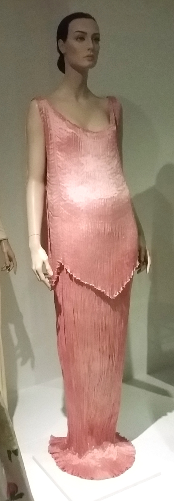
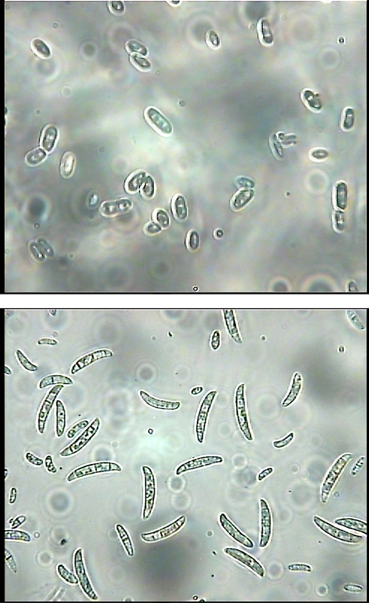
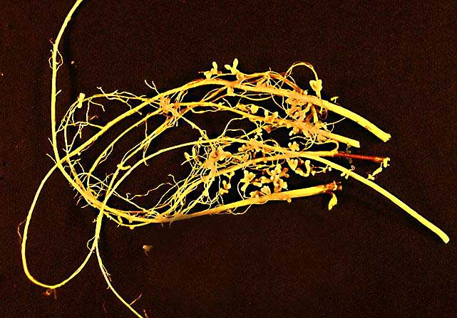
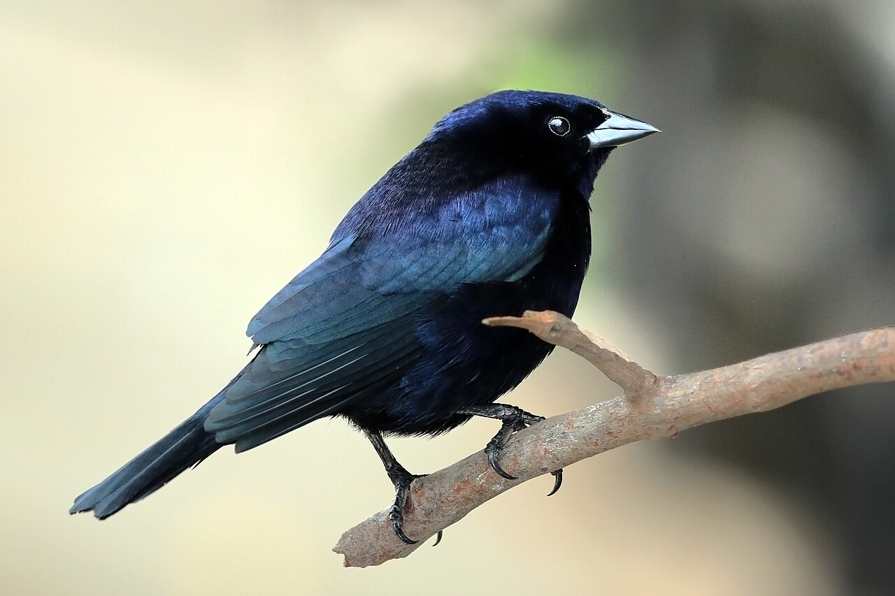
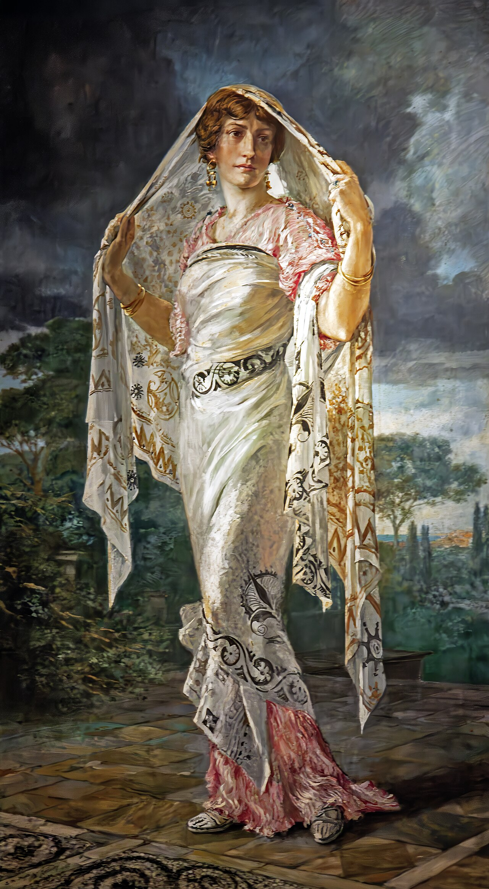

Lula.
diario de la mañana — el mundo, tu ciudad y lo que te asombra

Buen día. Martes nublado y templado, de 11° a 19°, con viento del este y sin lluvias. En el mundo, todo gira alrededor de un estrecho de 40 kilómetros de ancho: Macron sigue su gira por el Golfo mientras Ormuz define el precio de la energía. La ciencia de hoy la publicaron ayer y es hermosa: cómo un hongo que arruina trigales decide, por quorum sensing, si sus esporas duermen o germinan, y cómo unas bacterias de la rizosfera se meten en esa conversación. Y en moda, el martes de grandes casas: Mariano Fortuny, que era más químico que modisto y patentó un plisado que todavía nadie pudo reproducir.
- El mundo en cinco minutos4'
- Argentina y Buenos Aires3'
- Ciencia: el hongo que escucha9'
- Mirá a tu alrededor3'
- Receta de estación3'
- Un clásico en cinco minutos3'
- La palabra del día1'
- Le français du matin3'
- English corner4'
- Martes de moda: Fortuny6'
- Hoy en la historia · un lugar2'
- Lo que me asombra hoy1'
- Pasatiempo: sudoku fácil10'
- Cuaderno: repaso, quiz y escritura5'
Todo pasa por Ormuz
Macron sigue hoy en los Emiratos Árabes Unidos su gira por el Golfo, con la crisis energética de fondo. El estrecho de Ormuz, por donde pasa alrededor del 20 % del petróleo que se comercia en el mundo, está en disputa desde hace meses: el sábado y el viernes la Guardia Revolucionaria iraní informó explosiones de superpetroleros tras chocar con minas, Teherán sostiene que «el estrecho está cerrado» y Washington que sigue operativo. Los datos de tránsito le dan la razón a medias a los dos: según Kpler, el volumen que pasa hoy es apenas el 74 % del previo al conflicto, el más bajo en más de dos meses.
Por qué importa: es el mismo shock del que habló el FMI la semana pasada, y el que explica el Brent arriba de los 100 dólares. Para la Argentina tiene doble filo: encarece la energía importada y el flete, pero mejora los precios de exportación de Vaca Muerta. Para tu bolsillo, se siente en el transporte y en todo lo que viaje en camión.
Una propuesta de paz, en Oslo
El enviado de la Casa Blanca, Steve Witkoff, viaja a Oslo para discutir con Zelenski y líderes europeos una propuesta de paz para Rusia. En paralelo, el Papa León XIV —recuperándose de su operación de pulmón— habló por teléfono con Zelenski sobre un alto el fuego humanitario.
Brasil: el debate antes del domingo
Lula y Flávio Bolsonaro se enfrentaron anoche en un debate tenso, a una semana del balotaje del 25. Es la elección que define quién gobierna al principal socio comercial de la Argentina.
Y además
En Yemen escaló el conflicto entre los hutíes y Arabia Saudita, tras un bombardeo con decenas de soldados muertos. En Francia, el Gobierno reúne hoy a comerciantes, bancos y aseguradoras para evaluar los daños de los disturbios del sábado. En Indonesia hay protestas universitarias por los dos años de Prabowo en el poder. Y sigue en Ereván la COP17 de biodiversidad, que ayer abrió sus sesiones.
El riesgo país tocó su máximo del año
El indicador de JP Morgan subió 28 puntos en una sola rueda y cerró el lunes cerca de los 676 puntos básicos —hay fuentes que dan 675 y otras 678—, el valor más alto de 2026. Para dimensionarlo: el 10 de julio había tocado un mínimo de 403. En el último mes, los bonos en dólares acumulan una baja promedio cercana al 5 %.
Desde Neuquén, donde encabezó el Argentina Oil & Gas, Milei atribuyó la suba a factores externos, dijo que el dólar «no está atrasado» y repitió que el año que viene el Gobierno tiene «un seguro de US$ 125.000 millones». El vocero económico sumó el argumento de la «incertidumbre global», que no es un invento: con Ormuz y la suba de tasas larga en Estados Unidos, los emergentes se ven afectados en bloque.
Cómo leerlo sin ruido: el riesgo país es la sobretasa que el mercado exige sobre los bonos del Tesoro de EE. UU. Sube por dos motivos que conviene separar: porque suben las tasas afuera (afecta a todos) o porque el mercado duda del pagador (afecta solo a uno). Que los bonos argentinos caigan más que los de sus pares es el dato que hay que mirar, no el número suelto.
Para hacer en la ciudad
- Museo Nacional de Arte Decorativo (Del Libertador 1902): el palacio Errázuriz es el lugar de la ciudad donde mejor se entiende el gusto de la época de Fortuny, la sección de hoy. Entrada muy barata y colección permanente.
- XX Bienal Internacional de Arquitectura, eje HABITAR, en el Centro Cultural Recoleta (Junín 1930).
- Código natal, de Adriana Bustos, en el primer piso del Bellas Artes, hasta el 15 de noviembre.
- Para agendar: arteBA, del 30 de octubre al 1 de noviembre en La Rural.
El hongo que escucha cuántos son antes de despertarse
Una espora dormida tiene que resolver un problema de teoría de juegos: germinar temprano es ventajoso si hay comida y pocos competidores, y suicida si no. Fusarium pseudograminearum, el hongo que causa la podredumbre de la corona del trigo, lo resuelve midiendo su propia densidad poblacional con una molécula señal, el farnesol, un sesquiterpeno que ya se conocía como señal de quorum en Candida albicans. Lo nuevo —publicado ayer en Nature Microbiology por el grupo de Cong Jiang, con Aliang Xia y Daiying Xu— es quién lo escucha: un receptor acoplado a proteína G llamado Rsd1.

El experimento
- El circuito: con alta densidad poblacional y pocos nutrientes, el farnesol endógeno activa a Rsd1, que reprime la germinación de los conidios. Es un GPCR haciendo de sensor de quorum en un hongo filamentoso.
- Río abajo: predicciones con AlphaFold-Multimer y doble híbrido en levadura señalan a la subunidad Gα Gpa1 como el socio intracelular de Rsd1, y la cascada sigue por la MAPK Mgv1.
- El costo: dormir conviene para sobrevivir, pero sale caro al infectar. En ensayos sobre trigo, los mutantes rsd1 a baja densidad produjeron lesiones más largas que la cepa salvaje: sin el freno, el hongo ataca más.
- El giro bonito: bacterias de la rizosfera se meten en la conversación. Según la bacteria, promueven o inhiben la germinación de los conidios dormidos interfiriendo con el eje farnesol-Rsd1; distintos consorcios bacterianos corrieron el equilibrio entre dormancia resistente e infección, y con eso cambiaron la severidad de la enfermedad.
Lectura crítica
- Lo que no leí: trabajé con el resumen y la nota de difusión; no pude abrir las figuras. Cuando las veas, buscá las concentraciones de farnesol usadas (muchos efectos del farnesol in vitro aparecen a decenas o cientos de µM, lejos de lo fisiológico) y qué taxones bacterianos usaron.
- AlphaFold no es evidencia de interacción. Multimer predice una interfaz plausible; el doble híbrido en levadura confirma proximidad, pero ninguno de los dos mide acoplamiento funcional del receptor a la proteína G. Lo que lo demostraría es un ensayo de intercambio GDP/GTP o de AMPc.
- Cuidado con el salto al campo: macetas y hojas no son un lote. La rizosfera real tiene miles de especies, y el efecto de un consorcio definido en condiciones controladas rara vez sobrevive al suelo.
- La parte sólida es el fenotipo genético: un mutante del receptor que germina sin esperar y hace lesiones más largas es un resultado limpio y difícil de explicar de otro modo.
La conexión con lo que estudiás
Dos cosas. La primera: esto es quorum sensing eucariota, un concepto que solemos reservar para bacterias, y encima con un GPCR, la familia de receptores a la que apunta cerca de un tercio de los fármacos aprobados. La segunda, más aplicada: si la germinación depende de una señal química que las bacterias del suelo pueden manipular, aparece un blanco de biocontrol que no es un fungicida. En vez de matar al hongo —con la presión de selección que eso implica, como pasó con los azoles—, lo mantenés dormido. Es la misma lógica de los antivirulencia en bacterias: atacar la decisión, no la célula. Para la Argentina, donde el trigo es uno de los principales cultivos de exportación y Fusarium es un problema crónico, el ángulo no es teórico.
Xia A, Xu D, … Jiang C. «G-protein-coupled receptor sensing of farnesol controls fungal dormancy and is susceptible to bacterial interference». Nature Microbiology (19 de octubre de 2026), doi:10.1038/s41564-026-02509-x
Biotec en el mundo real · Rizobacter, bacterias en una bolsa


Si la ciencia de hoy va de la rizosfera, la biotec del día también. Rizobacter, de Pergamino, es la empresa argentina de inoculantes más grande del país y una de las grandes del mundo: según cifras de la compañía citadas por la prensa, sus inoculantes para soja llegaron a tener el 23 % del mercado global, con exportación a más de 40 países.
- Qué es un inoculante: una formulación con bacterias vivas que se aplica a la semilla. El caso clásico es Bradyrhizobium en soja: la bacteria infecta la raíz, forma nódulos y fija N₂ atmosférico con la nitrogenasa, un complejo con cofactor de FeMo que es extremadamente sensible al oxígeno. Por eso el nódulo fabrica leghemoglobina, que tampona el O₂ libre y le da al interior ese color rosado que viste si alguna vez cortaste uno.
- El producto real no es la bacteria: es la formulación. El desafío industrial es mantener vivas 10⁹ o 10¹⁰ UFC por mililitro durante meses de góndola, a temperatura de galpón, y que sobrevivan al secado sobre la semilla y a los fungicidas curasemillas. Protectores osmóticos, polímeros, control de actividad de agua: eso es el negocio.
- Lo que agregaron: inoculantes de Azospirillum brasilense (promotor de crecimiento, que actúa por auxinas más que por fijación) y coinoculaciones; y mezclas que suman Pseudomonas solubilizadoras de fósforo a la fijación de nitrógeno.
- El dato honesto: la empresa integra el grupo Bioceres, que atraviesa una crisis financiera; a principios de año Rizobacter renegoció deuda para evitar un default y una calificadora le bajó la nota. La tecnología es buena y el mercado existe: el riesgo acá es financiero, no científico.
- Salida laboral: microbiología industrial, control de calidad de bioinsumos, desarrollo de formulaciones, registro ante SENASA.
Ciencia en la vida cotidiana · Por qué la ropa de seda se arruina con el desodorante
La seda es fibroína, una proteína con una secuencia repetitiva de glicina-alanina-glicina-serina que se apila en láminas β antiparalelas. Esa estructura explica todo: la resistencia a la tracción (comparable a la del acero por unidad de masa), el brillo (las láminas forman superficies planas que reflejan como espejitos) y también su punto débil.
La seda es anfótera y frágil en los extremos de pH. Los enlaces peptídicos se hidrolizan en medio ácido o alcalino, y la fibra pierde resistencia sin que se vea nada hasta que se rompe. El aluminio de los antitranspirantes (clorhidrato de aluminio) hidroliza en contacto con el sudor y acidifica localmente; las manchas amarillas bajo el brazo son el resultado combinado de esa hidrólisis, de la reacción con las proteínas del sudor y de la oxidación. Por lo mismo, nunca uses lavandina en seda: el hipoclorito oxida los residuos de tirosina y triptófano y amarillea la fibra de forma irreversible. Agua fría, jabón neutro o champú (que está formulado para otra proteína, la queratina), y secar a la sombra: la luz UV también rompe fibroína.
El plumbago azul y el tordo que no construye nidos
._Astypalaia,_Greece.jpg){kind=link}

_male.JPG){kind=link}
La flor: plumbago o jazmín celeste
| Nombre científico | Plumbago auriculata (Plumbagináceas), originaria de Sudáfrica. No es un jazmín, aunque todo el mundo le diga así. |
|---|---|
| Dónde | Tapando medianeras, rejas y frentes en todos los barrios. Aguanta sol pleno, sequía y poda brutal: por eso está en todos lados. |
| Por qué ahora | Arranca su floración larga, de octubre a abril, con ramilletes de flores celestes de cinco pétalos. Es de las pocas flores realmente celestes del jardín porteño, un color raro en las plantas. |
| El detalle pegajoso | El cáliz está cubierto de pelos glandulares que segregan una sustancia viscosa: si rozás la planta, las florcitas se te pegan a la ropa. Es un mecanismo de dispersión (zoocoria) y, de paso, una trampa contra insectos que trepan a robar néctar sin polinizar. |
El ave: tordo renegrido
| Nombre científico | Molothrus bonariensis (Ictéridos) |
|---|---|
| Cómo reconocerlo | El macho es negro con reflejos violáceos y tiene un canto burbujeante, como agua cayendo; la hembra es gris parda y pasa desapercibida a propósito. |
| Por qué ahora | Primavera es su temporada, porque es cuando los demás anidan. Es un parásito de cría obligado: no construye nido ni incuba. La hembra pone sus huevos en nidos ajenos —se le conocen más de 250 especies hospedadoras— y a veces pica los huevos del dueño para mejorar las chances del propio. |
| Por qué es interesante | Es un caso de libro de coevolución: algunas hospedadoras aprendieron a reconocer y rechazar el huevo intruso, y el tordo respondió con huevos más variables. Una carrera armamentista sin armas. |
Tu misión de hoy
Zanahorias glaseadas con miel y tomillo
Una sartén, veinte minutos, y una guarnición que levanta cualquier cosa.
Ingredientes (2 porciones)
- 500 g de zanahorias, en bastones gruesos
- 20 g de manteca y un chorrito de aceite
- 1 cucharada de miel
- Un chorrito de vinagre de manzana o jugo de limón
- Tomillo, sal y pimienta
Pasos
- Poné las zanahorias en una sartén ancha con la manteca, el aceite, sal y agua hasta la mitad de su altura.
- Fuego fuerte y destapado, hasta que el agua se evapore (unos 12 minutos).
- Bajá el fuego, sumá la miel y el tomillo y movelas hasta que se cubran de brillo y empiecen a dorarse.
- Terminá con el vinagre fuera del fuego, para cortar el dulce.
La química de la receta
Por qué agua y grasa juntas: el agua cocina parejo a 100 °C y degrada las pectinas de la pared celular, que es lo que ablanda la zanahoria. Cuando se evapora, la temperatura de la sartén sube de golpe por encima de los 140 °C y recién ahí arrancan el dorado de Maillard y la caramelización de los azúcares. Es la misma técnica de los glacés franceses: hervir y dorar en el mismo utensilio, sin cambiar nada.
Por qué queda brillante: el glaseado es una emulsión. La manteca (grasa) y el almíbar que queda (agua, azúcares de la zanahoria y la miel) se mezclan con la ayuda de la pectina soluble que soltó la verdura, que actúa como espesante y estabilizante. Si lo cocinás de más, la emulsión se corta y queda la grasa por un lado y el caramelo por el otro.
Y la grasa no es opcional: el β-caroteno de la zanahoria es liposoluble. La cocción rompe las paredes celulares y lo libera de los cromoplastos, y la grasa de la sartén lo solubiliza y mejora muchísimo su absorción intestinal (va en micelas mixtas con las sales biliares). Zanahoria hervida y escurrida: mucho menos provitamina A disponible que esta.
El toque ácido del final: el vinagre baja el pH y aporta protones que compiten con los azúcares por tu percepción del dulce; además, los ácidos volátiles se evaporan si los ponés antes, así que el aroma se gana echándolo apagado el fuego.
Proust y los vestidos de Fortuny
En La prisionera, el narrador le regala a Albertine un Delphos. Traducción propia.
El vestido de Fortuny que llevaba esa noche Albertine me parecía la sombra tentadora de aquella Venecia invisible. Lo invadían ornamentos árabes, y los pájaros orientales, que significan alternativamente la muerte y la vida, se repetían en el tornasol de la tela, de un azul profundo que, a medida que mi mirada avanzaba hacia él, se mudaba en oro maleable.
Para entrar al texto
- Por qué Fortuny aparece en Proust: los vestidos del taller veneciano eran, en los años diez y veinte, lo más parecido a una obra de arte que una mujer podía ponerse. Proust los usa como lo que son en la novela: un objeto que condensa un lugar (Venecia), un deseo y el paso del tiempo. El vestido es la Venecia a la que el narrador no viaja.
- La frase clave: «se mudaba en oro maleable». Está describiendo con precisión física lo que hace la seda plisada de Fortuny: el color cambia con el ángulo porque la luz se refleja en miles de pliegues diminutos. Es tornasol, y es exactamente la sección de moda de hoy.
- Cómo leer a Proust sin asustarse: las frases son largas pero están hechas de capas, como la ropa. Leé una vez de corrido, sin entender del todo, y después una segunda vez buscando el verbo principal. Siempre está, y siempre llega tarde.
pliegue sustantivo
latín plicare (doblar, plegar) → castellano plegar, pliegue · francés plier, pli, plissé · inglés to pleat, ply
De plicare sale media biblioteca de verbos: aplicar (doblar hacia), implicar (doblar adentro), explicar (des-doblar: literalmente, desplegar lo que estaba doblado), complicar (doblar junto, enredar) y replicar (doblar otra vez). También simple y doble, que son «un pliegue» y «dos pliegues». En inglés quedó en ply (de ahí plywood, la madera terciada) y en to pleat; en francés, el plissé de Fortuny.
Y en tu carrera, la palabra está en el centro de todo: una proteína sale del ribosoma como una cadena lineal y lo único que la vuelve funcional es plegarse (protein folding), encontrar entre un número astronómico de conformaciones posibles la que tiene la energía libre mínima. Cuando el plegado falla, tenés agregados: amiloide, priones, cuerpos de inclusión en tu cultivo de E. coli. Las chaperonas están ahí para evitarlo, y AlphaFold se hizo famoso por predecirlo. Explicar, en su sentido viejo, es desplegar; plegar, en el tuyo, es lo que convierte una secuencia en una máquina.
L'addition, s'il vous plaît
Segunda clase de la semana: terminar de comer y pagar.
— C'est très bon ! J'ai soif.
— Je voudrais de l'eau, s'il vous plaît.
— L'addition, s'il vous plaît.
— Voilà. Merci, bonne journée !
| C'est très bon | Está muy rico [se tre BON] |
|---|---|
| J'ai soif | Tengo sed [ye SUAF] |
| de l'eau | agua [də LÓ] |
| l'addition | la cuenta [la-di-SIÓN] |
| Voilà | Acá tiene / listo [vua-LÁ] |
Un truco
Fijate en j'ai faim y j'ai soif: el francés, como el castellano, tiene hambre y sed (el inglés, en cambio, is hungry). Pasa lo mismo con j'ai froid, j'ai chaud, j'ai peur y j'ai … ans, que ya sabías. Si dudás, pensá en castellano y vas a acertar casi siempre.
À toi:
The building that nearly ruined its architect
When the Sydney Opera House was opened on this day in 1973, the man who had designed it was not there. Jørn Utzon had resigned seven years earlier, after a change of government in New South Wales turned a visionary commission into a running battle over money, and had left Australia for good. His name went unmentioned at the ceremony.
The project had gone spectacularly over budget — by a factor of more than fourteen, on the usual accounting — and had taken a decade longer than planned. Much of the delay came down to a problem Utzon had created for himself: the shells he had sketched were geometrically arbitrary, and nobody knew how to build them. The breakthrough, when it came, was beautifully simple. Every shell could be cut from the surface of a single sphere, which meant the ribs could be mass-produced from a handful of moulds instead of made one by one.
The building has since become the sort of landmark that stands in for an entire country, which tends to make the fight that produced it look like a misunderstanding rather than what it was. Utzon never saw the finished work. He was brought back as a consultant in 1999, more than thirty years on, and his son represented him when the building was inscribed as a World Heritage site. Whether that counts as a reconciliation or a belated apology is still argued over in Sydney.
- to go over budget — pasarse del presupuesto
- a running battle — una pelea continua, sin tregua
- to go unmentioned — no ser mencionado
- to come down to — reducirse a, deberse a
- a breakthrough — un avance decisivo
- to stand in for — representar, hacer las veces de
- belated — tardío
- to be argued over — ser objeto de discusión
Your turn (answer in English):
Fortuny: el modisto que era, en realidad, un químico

En 1907, en un palacio del siglo XV en Venecia, Mariano Fortuny y Madrazo presentó un chal estampado al que llamó Knossos, inspirado en la Creta minoica; lo usó, entre otras, Isadora Duncan. Poco después llegó el vestido que lo volvió legendario: el Delphos, bautizado por el Auriga de Delfos, esa estatua griega de bronce con la túnica de pliegues verticales. Era un tubo de seda plisada que caía desde los hombros, sin corsé, sin estructura, sin cintura. En 1909 se patentó el método de plisado; la solicitud, según el Metropolitan, nombra como inventora a Henriette Nigrin, su mujer y colaboradora.
Por qué era un escándalo
Pensá en 1909: una mujer de la alta sociedad llevaba corsé, enaguas, armazones. El Delphos se ponía sobre el cuerpo desnudo y lo seguía. Al principio se usó puertas adentro, como un tea gown, y recién en los años veinte salió a la calle, cuando la silueta recta de la moda le dio la razón veinte años después. Es uno de los poquísimos diseños que se fabricaron casi sin cambios durante cuarenta años: el mismo vestido en 1909 y en 1949.
El secreto que nadie pudo copiar
Fortuny no venía de la moda: era pintor, fotógrafo, escenógrafo e inventor, con patentes de iluminación teatral (la cúpula Fortuny, que simulaba el cielo con luz indirecta) y de procedimientos de estampado. El plisado del Delphos se hacía con calor, presión y una química propia; las piezas se enroscaban y se retorcían, y los pliegues corrían a lo largo, con ondas transversales que —según el relato del propio taller— se daban con tubos de cobre o cerámica caliente. El proceso nunca se publicó por completo y nunca se reprodujo: cuando un Delphos pierde los pliegues, no hay quien se los devuelva. Por eso los museos los guardan enroscados, como una soga, dentro de una caja: colgarlo lo estira y lo mata.
Los colores salían de teñidos sucesivos, a veces más de una docena de procesos sobre una misma tela, con tintes naturales aplicados a mano. El tornasol no es un estampado: es la luz rebotando en miles de pliegues.
La química que hay detrás (y por qué te interesa)
La seda es una fibra proteica: fibroína, en láminas β. A diferencia del algodón (celulosa) o del poliéster, una proteína se puede reconfigurar: con vapor y calor se rompen puentes de hidrógeno y enlaces disulfuro entre cadenas, la fibra se deforma y, al enfriarse bajo presión, los enlaces se rehacen en la nueva posición. Eso es un plisado permanente, y es el mismo principio de la permanente del pelo, que trabaja sobre queratina. Lo que Fortuny tenía (y no contó) era la combinación exacta de humedad, temperatura, tiempo y qué agentes usaba. Hoy el plisado industrial se hace sobre poliéster, que es mucho más fácil: es termoplástico y basta calentarlo por encima de su temperatura de transición vítrea. Más fácil, y por eso menos vivo.
20 de octubre de 1973: se inaugura la Ópera de Sídney
Isabel II inauguró ese día el edificio más reconocible del hemisferio sur, dieciséis años después de que un jurado rescatara del montón de descartes el proyecto de un arquitecto danés casi desconocido, Jørn Utzon. La obra costó catorce veces más de lo presupuestado, demoró una década más de lo previsto, y su autor renunció en 1966, se fue de Australia y no volvió nunca a ver el edificio terminado. En la ceremonia no se dijo su nombre.
El problema técnico fue que las cáscaras dibujadas a mano no tenían una geometría definida. La solución, que tardó años, fue encontrar que todas podían recortarse de la superficie de una misma esfera: así las costillas se fabricaron en serie, con unos pocos moldes.
El lugar: Bennelong Point, Sídney
| Dónde | Una punta de tierra que entra en la bahía de Sídney, al lado del Harbour Bridge. Antes hubo ahí un fuerte y después el depósito de tranvías. |
|---|---|
| El nombre | Por Bennelong, un hombre del pueblo eora que vivió en ese lugar a fines del siglo XVIII y fue llevado a Inglaterra; el sitio tiene además nombre propio en lengua eora, Tubowgule. |
| Las tejas | Más de un millón de azulejos suecos, en dos tonos de blanco: brillante y mate, para que la luz no rebote igual en toda la superficie. |
| Hoy | Patrimonio de la Humanidad desde 2007, uno de los pocos declarados en vida del autor. |
Un capullo de seda es un solo hilo de casi un kilómetro
La oruga de Bombyx mori teje su capullo con un único filamento continuo, que sale de dos glándulas en la cabeza y se pega con sericina. Si lo desenrollás con cuidado —ablandando la sericina en agua caliente, que es exactamente lo que hace la industria—, ese hilo mide entre 600 y 1.500 metros. Para una sola bobina de seda hilada hacen falta varios capullos unidos; para un vestido, miles.
Y el hilo es increíblemente fino: entre 10 y 20 micrómetros de diámetro, menos que un pelo humano. La oruga lo extruye moviendo la cabeza en forma de ocho, unas 300.000 veces, durante tres días seguidos. El Delphos de la sección de moda, esos pliegues que ningún laboratorio pudo copiar, está hecho de eso: un animal del tamaño de tu dedo haciendo nudos de ocho durante setenta y dos horas.
El de los martes
Completá cada fila, cada columna y cada caja de 3×3 con los números del 1 al 9, sin repetir. Tiene una sola solución.
Repaso y quiz de la mañana
Repaso de idiomas
Quiz
¿Qué señal usa Fusarium pseudograminearum para medir su densidad poblacional?
Rsd1, la proteína que lo detecta, es…
Los mutantes rsd1 a baja densidad, sobre trigo…
¿Qué hace la leghemoglobina del nódulo?
El desafío industrial de un inoculante es, sobre todo…
¿Por qué se cocinan las zanahorias primero con agua y después en seco?
El Delphos de Fortuny se guarda en los museos…
El plisado permanente de la seda funciona porque…
«Explicar» viene de plicare y significaba, literalmente…
¿Cómo se resolvió la geometría de las cáscaras de la Ópera de Sídney?
Escritura: tres líneas para hoy
- Quiz: farnesol · un GPCR · lesiones más largas · tampona el O₂ · la formulación · el agua ablanda y después sube la temperatura · enroscado · se rompen y rehacen enlaces de la fibroína · desplegar · recortadas de una misma esfera.
- Repaso: je voudrais un café · je range ma chambre · je mets un pull · hacer un balance · una vara de medir · escudriñar, estudiar con lupa.
- Francés 1: «Je voudrais de l'eau, s'il vous plaît. L'addition, s'il vous plaît.» · 2: «J'ai faim. J'ai soif. J'ai froid.»
- English 1: The shells had no defined geometry, so each one would have had to be built individually; the solution was to cut every shell from the surface of a single sphere, which allowed the ribs to be mass-produced from a few moulds.
Sudoku:
Fuentes de esta edición
- Mundo: EFE Internacional, 20 de octubre · Ámbito: el tránsito por Ormuz · Moncloa: el superpetrolero
- Argentina: La Nación: el riesgo país · El Economista · Milei en Neuquén
- Clima: Pronóstico para hoy (datos del SMN) · La Nación: las alertas de hoy
- Ciencia: Nature Microbiology: farnesol, Rsd1 y la dormancia fúngica
- Biotec: Ámbito: la planta de Pergamino · Rizobacter: inoculantes de Azospirillum · Ámbito: la deuda
- Moda: The Met: conservación del Delphos · Cooper Hewitt · Palazzo Fortuny: el nacimiento del Delphos
- Historia: UNESCO: Sydney Opera House · Historia del edificio
Mañana, miércoles: letras argentinas. — Lula.